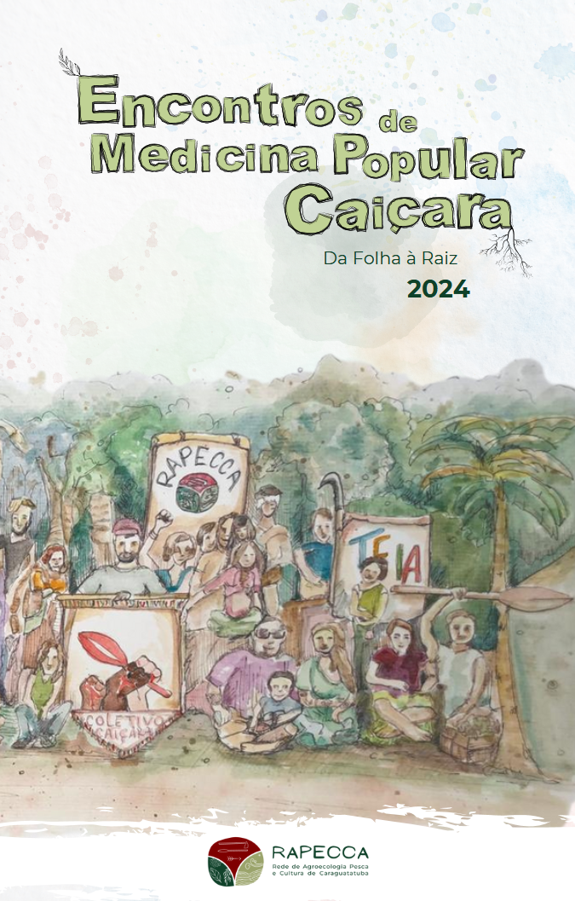

Clique aqui ou na capa do livro para ver sua prévia!
Livreto-síntese 2024
Encontros de Medicina Popular Caiçara
Com a licença dos mais velhos, plantando pelos mais novos...
Apresentação
Com muita alegria, a RAPECCA, em parceria com o Coletivo Caiçara e a Teia dos Povos, apresenta o livreto-síntese Encontros de Medicina Popular Caiçara — Da Folha à Raiz (2024). Este material autêntico é o resultado vivo de seis encontros circulares, mutirões e partilhas que percorreram os territórios de Caraguatatuba e região.
Como garantir o seu exemplar
Para apoiar a nossa rede e receber o livro completo de forma rápida, siga este passo a passo.
- Faça um PIX no valor de R$15,00 para a chave e-mail: rapecca.agroecologia@gmail.com.
- Envie o comprovante para o mesmo e-mail: rapecca.agroecologia@gmail.com.
- Receba o material: assim que confirmarmos o pagamento, o livro completo será enviado por resposta ao seu e-mail.
Toda a arrecadação com a venda do livreto é revertida para a continuidade das ações, hortas comunitárias e mutirões da rede.
🌱 Fortaleça a Rapecca. Faça o seu pedido e boa leitura!
Disponibilidade e identificação
Garanta o seu exemplar e fortaleça a Rede.